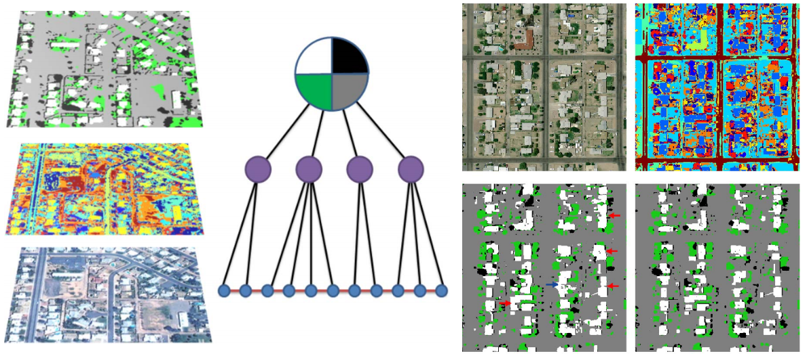
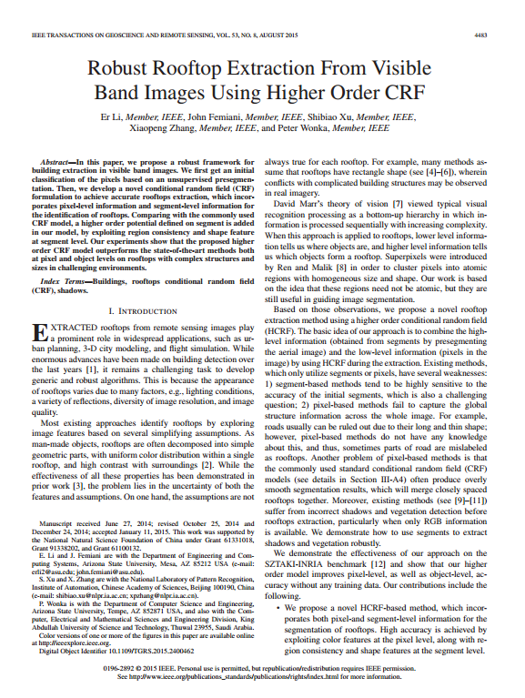

|
Robust Rooftop Extraction from Visible Band Images Using Higher Order CRF
|
|
Er Li 1,2
John Femiani 2
Shibiao Xu 1
Xiaopeng Zhang 1
Peter Wonkag 2
1 National Laboratory of Pattern Recognition, Institute of Automation, Chinese Academy of Sciences 2 Arizona State University IEEE Transactions on Geoscience and Remote Sensing (TGRS), 2015 |
|  |
|  |
Paper [PDF] |